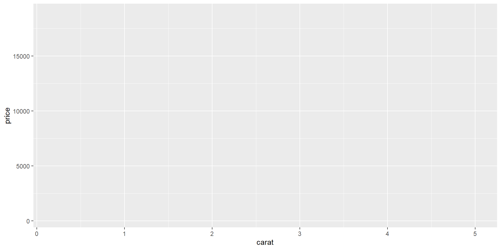

Aesthetics: what makes your data visible, e.g., size, line color, variables to plot, fill color, line type, transparency, etc.
Geometry: determines the type of plot.
Statistics: statistical transformation of continuous data
Facets: for splitting plot into subplots.
Coordinates: Numeric systems to limit, breakdown, transform position of geometry.
Themes: Overall visual of plots and customization.
Building a plot layer-by-layer
Load data with ggplot()
# Load librarylibrary(ggplot2)# Define data and global aestheticsggplot(diamonds)
Building a plot layer-by-layer
Add aesthetics by aes()
# Load librarylibrary(ggplot2)# Plot diamondsggplot(diamonds, aes(x = carat, y = price, color = cut))

Building a plot layer-by-layer
Add geometry by geom()
# Load librarylibrary(ggplot2)# Define data and global aestheticsggplot(diamonds, aes(x = carat, y = price, color = color)) +geom_point(alpha =0.8)
Building a plot layer-by-layer
Add statistics
# Load librarylibrary(ggplot2)# Define data and global aestheticsggplot(diamonds, aes(x = carat, y = price, color = color)) +geom_point(alpha =0.8) +stat_smooth(color ="black", linewidth =0.8)
Building a plot layer-by-layer
Add facets
# Load librarylibrary(ggplot2)# Define data and global aestheticsggplot(diamonds, aes(x = carat, y = price, color = color)) +geom_point(alpha =0.8) +stat_smooth(color ="black", linewidth =0.8) +facet_grid(cut ~ color)
Building a plot layer-by-layer
Adding coordinates
# Load librarylibrary(ggplot2)# Define data and global aestheticsggplot(diamonds, aes(x = carat, y = price, color = color)) +geom_point(alpha =0.8) +stat_smooth(color ="black", linewidth =0.8) +facet_grid(cut ~ color) +scale_y_continuous(breaks =seq(from =0, to =20000, by =10000))
Building a plot layer-by-layer
Adding theme
# Load librarylibrary(ggplot2)# Define data and global aestheticsggplot(diamonds, aes(x = carat, y = price, color = color)) +geom_point(alpha =0.8) +stat_smooth(color ="black", linewidth =0.8) +facet_grid(cut ~ color) +scale_y_continuous(breaks =seq(from =0, to =20000, by =10000)) +theme_bw()
Aesthetics
Aesthetics aes() describe how variables map to visual properties or aesthetics.
The position of data points are described by values from x and y
shape, size, or color styles can also be specified in aes().
Commonly used aesthetics in data visualization: position, shape, size, color, line width, line type. Figure from Wilke (2019)
Types of Variables Used in Aesthetics
Continuous variables
A variable or a set of value you can measure.
Continuous data values are values you can arbitrarily fine intermediates.
Age, height, BMI, date, assignment score, etc.
Sometimes, series of continuous variable can be a discrete variable.
my_seq <-seq(from =0, to =10, by =1)class(my_seq)sum(my_seq)count(my_seq)my_seq2 <-as.character(my_seq)class(my_seq2)sum(my_seq2)count(my_seq2)
Discrete variables
A variable or a set of value you can count.
Grade (A B C D), Name, Type, number of person in a room, etc.
Sometimes a vector of a discrete variable can be classified into a kind of ordinal number. That may required before time-series plotting.
ggplot(airquality,aes(x = Wind, y = Temp)) +geom_point() +scale_x_continuous(breaks =seq(from =0, to =20, by =2)) +scale_y_continuous(breaks =seq(from =0, to =100, by =5))
Position scales and axes
Numeric position scales (2)
Expand
ggplot(airquality,aes(x = Temp, group =as.factor(Month), fill =as.factor(Month))) +geom_density(alpha =0.6) +scale_y_continuous(expand =c(0,0)) +scale_x_continuous(expand =c(0,0))
log transformation
ggplot(diamonds,aes(x = carat, y = price, color = cut)) +geom_point(alpha =0.6) +scale_y_log10()
The distiller scales applied brewer color palettes by by smoothly interpolating 7 colors from any palette to a continuous scale. For more brewer color palettes, see https://colorbrewer2.org.
Color scales and legends
Continuous color scales: ggsci color palettes
library(ggsci)dt_hm <-scale(as.matrix(mtcars)[1:10, ], center =TRUE, scale =TRUE)p_hm <-as.data.frame(dt_hm) %>%rownames_to_column(var ="cars") %>%pivot_longer(!cars) %>%ggplot(aes(x = name, y = cars, fill = value)) +geom_tile(color ="black") +coord_equal() +labs(x=NULL, y =NULL) +theme(legend.position ="none",axis.text.x =element_blank())p_hmp_hm +scale_fill_gsea()p_hm +scale_fill_material("yellow")p_hm +scale_fill_material("grey")